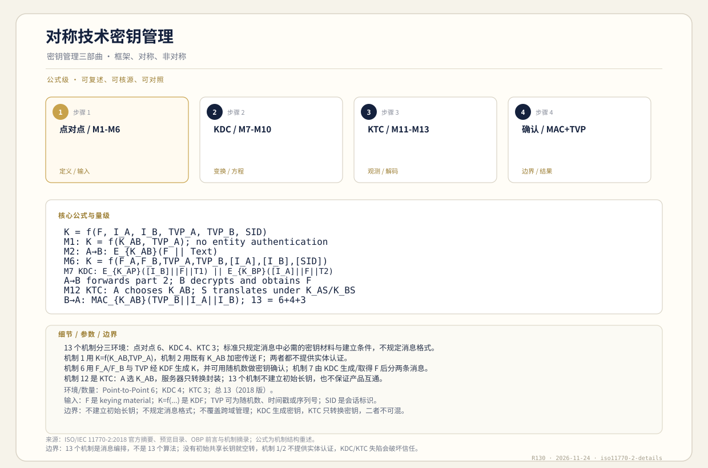
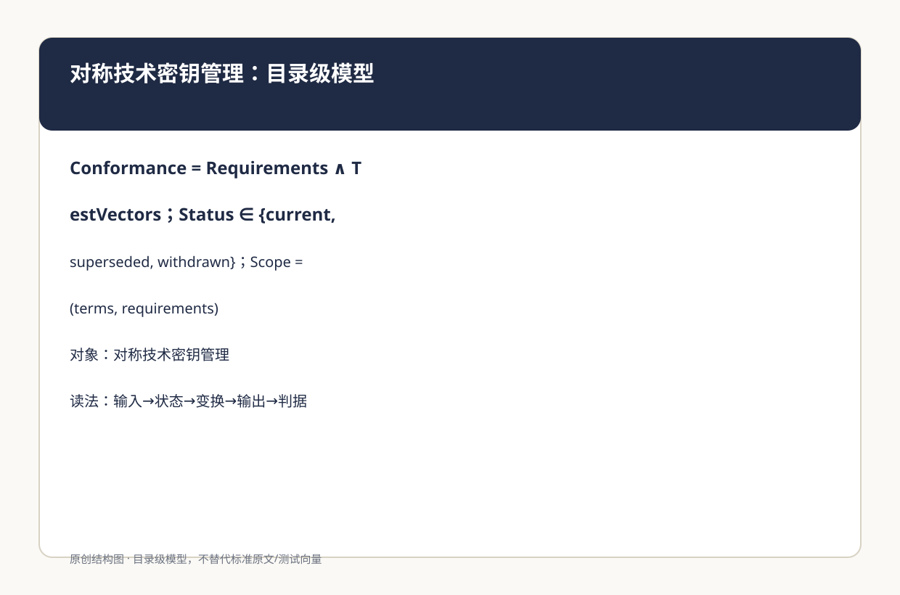

原理与机制
标准：对称技术密钥管理（Key management — Part 2: Mechanisms using symmetric techniques）。ISO/IEC 11770-2:2018 把对称密钥建立分成三类环境：Point-to-Point 6 个机制、KDC 4 个、KTC 3 个，共 13 个。它只规定消息中必须携带的密钥材料与建立条件，不规定消息格式、错误消息、初始密钥建立、跨域管理或实现兼容性。通用式 K=f(F,I_A,I_B,TVP_A,TVP_B,SID)：F 是 keying material，I 是实体标识，TVP 是随机数/时间戳/序列号，SID 是会话标识；f 是密钥派生函数。机制 1 只用 TVP 派生，机制 2 由 A 选 F 并用既有 K_AB 加密传送，二者不提供实体认证。机制 6 用双方各自持有的 F_A、F_B 与 TVP 经 KDF 生成 K，可附 I_A、I_B、Text、SID，并用随机数做密钥确认。机制 7 由 KDC 生成或取得 F，分别用 A、B 与 KDC 的长钥加密成两条消息，A 转发第二条给 B。机制 12 是 KTC：A 自己选 K_AB，服务器只把它转换成 B 可解的封装，不生成密钥。密钥确认不是实体认证的同义词：它只证明对方持有同一 K；实体认证还要证明对方是声称的实体，通常靠签名或额外协议。

为什么重要
Part 2 的公式级价值在于区分“谁选密钥、谁看密钥、谁确认密钥”。Point-to-Point 适合双方已有长钥；KDC 适合中心化分发但中心知道密钥；KTC 适合一方控制密钥、中心只做转换。三者的信任假设不同，不能用一个“密钥分发”标签糊过去。13 个机制不是 13 个算法；它们是消息编排。KDF 的选择、TVP 的 freshness、密钥确认的方向、SID 的绑定，决定协议能否抵抗重放、反射与未知密钥共享。为什么公式里要写 I_A/I_B/SID：不把身份和会话绑进派生输入，跨会话密钥可能相同；不绑 TVP，重放可能通过。
应用与实例
选型顺序：先看双方是否有共享长钥；有则点对点，需中心则 KDC，需一方保留密钥控制权则 KTC。再定 KDF：用 ISO/IEC 11770-6 或成熟 HKDF/KDF，输入身份、随机数、SID 与用途标签。消息中至少绑定协议版本/机制标识、发起方/响应方标识、TVP、密钥用途。密钥确认用 MAC_{K_AB}(TVP_B||I_A||I_B) 之类的绑定，不能只发“OK”。工程检查：长钥是否预置且不重用；TVP 是否唯一；KDC/KTC 是否在信任边界内；密钥确认是否双向；错误消息是否泄露密钥状态；是否把 MAC 钥与加密钥分离。

边界与攻击面
标准不建立初始长钥；没有初始信任，任何机制都空转。机制 1/2 无实体认证，易受中间人/重放；KDC 被攻破则所有派生密钥暴露；KTC 可能看到或替换密钥材料。TVP 重用、KDF 输入不足、密钥确认缺失、SID 不绑定、把同一密钥用于加密与 MAC，都会破坏安全。产品符合标准不等于产品互通；消息格式不在标准范围内。它也不处理跨域密钥管理、密钥生命周期、实现侧信道；这些分别看 Part 1、Part 7 与实现标准。
历史与背景
1996 年第一版；2008 年第二版技术修订，修改机制 12 的安全缺陷；2018 年第三版更新 Clause 5 要求、给加密串加可选消息/机制标识、扩展机制 5 的密钥计算输入、微调机制 8 第四条与机制 10 第二条消息；2024 年复审确认。
技术参数与复算边界
该条目的形式模型是 (S=\min_i S_i,\quad S_i\in{\text{密钥强度},\text{分组安全},\text{实现安全}})。输入：输入：对称技术密钥管理的公开参数、密钥/随机数与消息；变量说明：S 为综合安全强度；各分量取最小值，不能只看密钥位数。 预期输出：按 对称技术密钥管理 的规范执行后得到可验证的输出或可比较的优势界。 复算必须给出输入、步骤、输出和单位；示例只演示流程，不替代标准测试向量。
复杂度由密钥长度、分组/状态规模、轮数、随机数质量和敌手模型共同决定；参数越界、版本差异与实现侧信道都可能使公式结论失效。已登记限制：该条目只给出形式模型与可复算步骤，不声称已完成生产实现、侧信道认证或第三方安全评估。
逐步示例与核验
形式模型与复算步骤
[S=\min_i S_i,\quad S_i\in{\text{密钥强度},\text{分组安全},\text{实现安全}}]
对称技术密钥管理的公开参数、密钥/随机数与消息；变量说明：S 为综合安全强度；各分量取最小值，不能只看密钥位数。1.读取标准规定的密钥/分组/模式参数。2.按标准表换算等效强度。3.取最弱分量作为系统强度。边界：公式只覆盖已登记的参数与假设；参数取值、标准版本和实现细节仍以来源为准。
参考出处
- Wikipedia search entry for 对称技术密钥管理. https://zh.wikipedia.org/w/index.php?search=%E5%AF%B9%E7%A7%B0%E6%8A%80%E6%9C%AF%E5%AF%86%E9%92%A5%E7%AE%A1%E7%90%86
- Handbook of Applied Cryptography (Menezes, van Oorschot, Vanstone). https://www.cacr.math.uwaterloo.ca/hac/